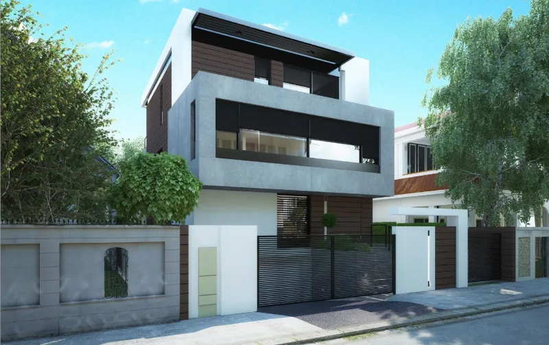
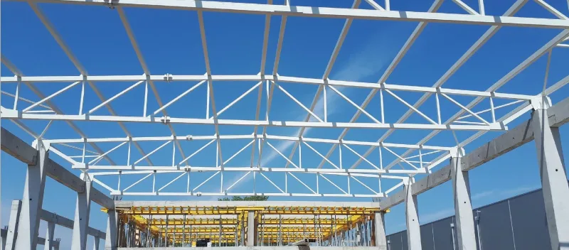
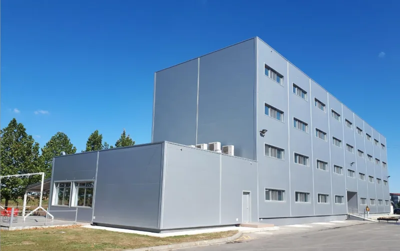
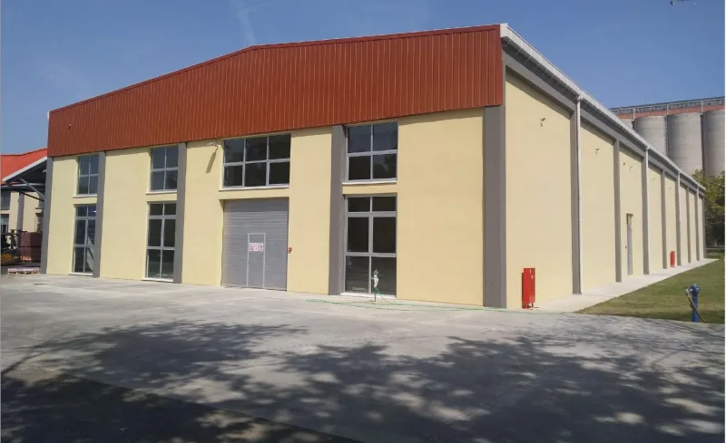
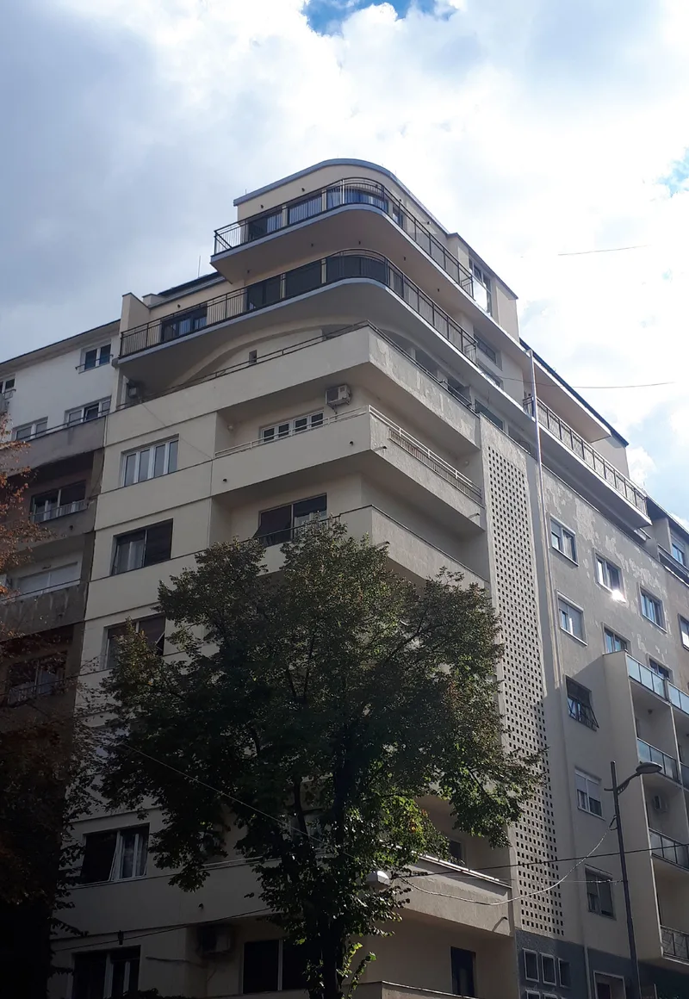
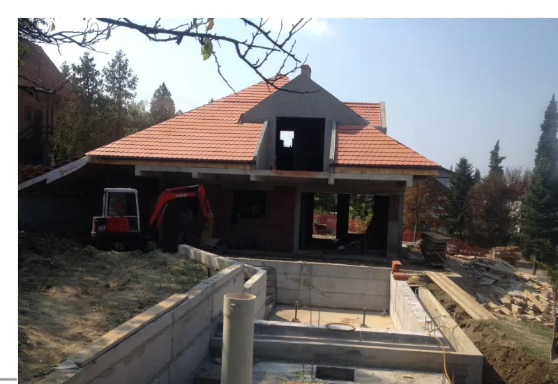
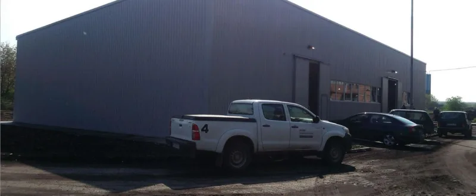
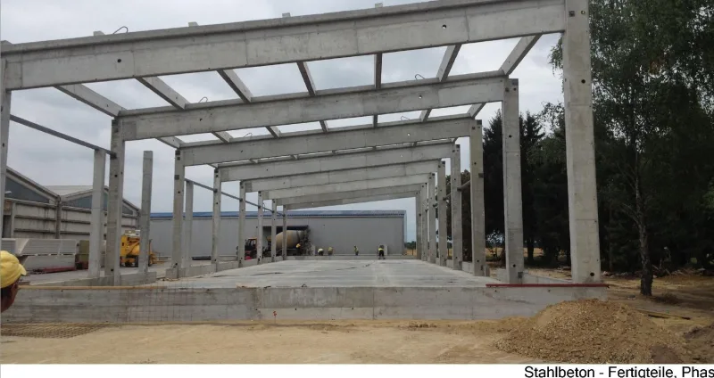
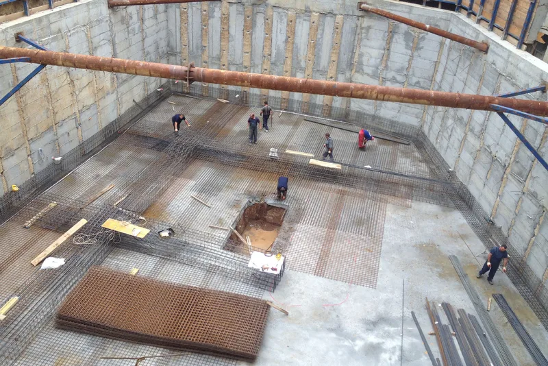

Reference
Odabrani projekti u izvođenju, kalkulaciji, savetovanju i optimizaciji.


Rukovođenje gradilištem – Srbija 2014–2019
Rukovođenje projektima i gradilištima za stambene, poslovne i industrijske objekte u Srbiji.

Porodična kuća
Dedinje, Beograd · 670 m² · jun 2018 – jan 2019
Pogledaj detalje
Autobuska garaža i poslovni objekat
Požarevac · 2.300 m² · mart – jul 2018
Pogledaj detalje
Poslovni objekat – Kühne und Nagel
Ugrinovci, Beograd · 2.400 m² · maj – sep 2017
Pogledaj detalje
Skladišna hala za brašno i testenine
Novi Sad · 2.000 m² · mart – jul 2017
Pogledaj detalje
Dogradnja dva sprata
Dorćol, Beograd · 500 m² · sep 2016 – feb 2017
Pogledaj detalje
Porodična kuća sa zaštitom od klizišta
Umka · maj – sep 2016
Pogledaj detalje
Skladišna hala za mehanizaciju
Kostolac · 800 m² · dec 2015 – mart 2016
Pogledaj detalje
Skladišna hala za semensku robu – I i II faza
Sombor · 2.200 m² · jun 2015 – jan 2018
Pogledaj detalje
Podzemna garaža / Parking
Beograd · 1.500 m² · nov 2014 – jun 2015
Pogledaj detalje